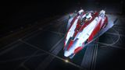

Top speed / boost
265 / 357 m/s
The premier medium duelling hull and one of the best combat ships at any size. A huge hardpoint flanked by four mediums, best-in-class agility, and an oversized class-6 distributor combine to make it lethal in one-on-one fights. Tiny internals and a short jump range are the price; when the target is a single enemy, nothing in its class does it better.

This ship's 1–100 suitability rating reflects its fully-engineered fit for this role, scored against every ship in the role. See how ships are rated.
The Fer-de-Lance is built around a single idea: win the fight in front of you. A huge hardpoint — rare on a medium — sits amid four mediums with tight convergence, and a class-6 power distributor (the size you'd expect on a far bigger ship) feeds them all without the brown-outs that throttle other fighters. Six utility mounts carry an unusually heavy defensive suite for the class.
It pays for that focus with internals. Just six optionals, none larger than class 5, mean it can't tank as deeply or carry the cell-bank stacks of a Krait or Python Mk II, and its jump range is short. But in a duel — PvP or a tough single NPC — its agility, alpha and sustained fire are class-leading. The FDL is a scalpel, not a hammer.
One-on-one combat: PvP duelling, assassination targets, high-ranked single NPCs, and any fight where out-manoeuvring and focusing down one enemy matters more than grinding a crowd.
Four things make the Fer-de-Lance the duelling king:
Six small optionals and a short jump range are real costs — the FDL can't tank as deeply as a Krait, can't stack cell banks like a Python Mk II, and is tedious to fly between systems. In a long multi-target grind it tires; in a crowd it can be swarmed. Its dominance is the duel, not the marathon.
Both tables rate ships for the combat role specifically. The role column is the hardpoint loadout — the raw weapon mounts behind the damage.
Same class — medium-pad combat ships
| Ship | Class | Hardpoints | Pros & cons vs Fer-de-Lance | Rating |
|---|---|---|---|---|
| Fer-de-Lance this | Medium | 1H 4M | — this hull (baseline) | 93 |
| Python Mk II | Medium | 4L 2M | Four large mounts; deeper tank; more sustained DPSLess agile; no huge hardpoint | 90 |
| Krait Mk II | Medium | 3L 2M | SLF bay; deep internals; balanced and tankyLess agile; no huge hardpoint | 90 |
| Mamba | Medium | 1H 2L 2S | Faster; same huge-mount alpha on a straight passFar worse agility; can't hold a turn fight | 89 |
| Alliance Chieftain | Medium | 2L 1M 3S | Superb agility; tough; cheap; great AXLower alpha; no huge mount | 88 |
| Alliance Challenger | Medium | 1L 3M 3S | Tankiest Alliance hull; many gunsSlower; less agile | 86 |
| Corsair | Medium | 3L 3M | Six guns; modern; roomier internalsLess agile; no huge mount | 85 |
| Federal Assault Ship | Medium | 2L 2M | Fast, agile, tough Federal brawlerLess firepower; Federal rank gate | 84 |
| Python | Medium | 3L 2M | Versatile; roomy; multi-roleLess agile; lower combat ceiling | 83 |
| Federal Gunship | Medium | 1L 4M 2S | Seven hardpoints; very toughSluggish; Federal rank gate | 82 |
For one-on-one fighting the Fer-de-Lance tops the medium class — nothing else combines a huge hardpoint, this agility and an oversized distributor. The Python Mk II and Krait match or beat it for grinding crowds and tanking, but in a duel the FDL is the medium to beat.
Other classes — the larger leagues
| Ship | Class | Hardpoints | Pros & cons vs Fer-de-Lance | Rating |
|---|---|---|---|---|
| Federal Corvette | Large | 2H 1L 2M 2S | More guns and tank; also highly agile for a large shipFederal Rear Admiral rank; ~187M Cr; large pad | 98 |
| Imperial Cutter | Large | 1H 2L 4M | Vast shields and firepowerImperial rank; poor agility; large pad | 91 |
| Anaconda | Large | 1H 3L 2M 2S | Eight hardpoints; vast internalsPonderous; costly; large pad | 88 |
| Kestrel Mk II | Small | 3L 2S | Small-pad with huge firepower; agileNewer; less internal room than the FDL | 85 |
| Vulture | Small | 2L | Small-pad agility; cheap duellist on a budgetOnly two guns; power-starved; less alpha | 80 |
The Corvette is the FDL writ large — the only ship that out-duels it, at the cost of a Federal grind and a large pad. Below it, the Vulture is the small-pad budget duellist. For a medium-pad scalpel that beats almost anything one-on-one, the Fer-de-Lance stands nearly alone.
At ~51M Cr the hull is a premium medium, with no rank or permit gate. Its small internals actually keep the outfitting bill modest — there are fewer big modules to A-rate — so the all-in engineered cost is reasonable for a top-tier fighter.
Spend on the weapons, distributor and shield first; the FDL's combat value comes from feeding its guns and holding a tight defensive utility suite, not from deep internal modules it doesn't have.
The FDL needs only credits — no navy grind. It's the most accessible elite duelling hull in the game.
There is no combat-specific ARX pre-built built around the Fer-de-Lance; buy and outfit it normally through a shipyard.
A duelling fit built around the huge hardpoint and a heavy utility suite, tanked as deeply as six small optionals allow. Initial is buy-only; A-rated is the duel-ready baseline; Engineered applies the house combat pattern.
| Slot | Initial · buy-only | A-Rated · no eng | Engineered |
|---|---|---|---|
| Hardpoints | |||
| Huge | Multi-Cannon 4 | Multi-Cannon 4 | MC 4 — Overcharged + Corrosive |
| Medium 1 | Pulse Laser 2 | Beam Laser 2 | Beam 2 — Thermal Vent |
| Medium 2 | Pulse Laser 2 | Beam Laser 2 | Beam 2 — Thermal Vent |
| Medium 3 | Multi-Cannon 2 | Multi-Cannon 2 | MC 2 — Overcharged |
| Medium 4 | Multi-Cannon 2 | Multi-Cannon 2 | MC 2 — Overcharged |
| Utility Mounts | |||
| Utility 1 | Shield Booster | Shield Booster | Shield Booster — Heavy Duty |
| Utility 2 | — | Shield Booster | Shield Booster — Heavy Duty |
| Utility 3 | — | Shield Booster | Shield Booster — Heavy Duty |
| Utility 4 | — | Chaff Launcher | Chaff Launcher |
| Utility 5 | — | Heat Sink Launcher | Heat Sink Launcher |
| Utility 6 | — | Point Defence | Shield Booster — Heavy Duty |
| Core Internals | |||
| Power Plant (6) | E | A | A — Overcharged (G5) |
| Thrusters (5) | E | A | A — Dirty Drive Tuning (G5) |
| FSD (4) | E | A | A — Increased Range (G3) |
| Life Support (4) | E | D | D — Lightweight |
| Power Distributor (6) | E | A | A — Charge Enhanced (G5) |
| Sensors (4) | E | D | D — Lightweight |
| Fuel Tank (3) | C | C | C |
| Optional Internals | |||
| Optional 5 | Shield Generator 5 | Shield Generator 5 (bi-weave) | Bi-Weave 5 — Resistance Augmented |
| Optional 4 | — | Shield Cell Bank 4 | SCB 4 |
| Optional 4 | — | Hull Reinforcement 4 | HRP 4 — Heavy Duty |
| Optional 2 | — | Hull Reinforcement 2 | HRP 2 — Heavy Duty |
| Optional 1 | — | Module Reinforcement 1 | Module Reinforcement 1 |
| Optional 1 | — | Shield Cell Bank 1 | Module Reinforcement 1 |
The FDL's identity is its huge hardpoint — a huge multi-cannon (Corrosive) or plasma accelerator. The oversized distributor means you can fire it continuously; build the rest of the ship to keep that gun on target.
Buy the hull and fit the largest shield the class-5 bay allows plus a hull reinforcement — it's duel-ready quickly.
Arm the huge mount with a gimballed multi-cannon and the mediums with a mix of beams (shields) and multi-cannons (hull).
Load the six utilities with shield boosters and chaff — the FDL tanks through shields, not bulk armour.
A-rating priority for a duellist — feed the guns, then the shield:
Don't over-mass the FDL chasing tank — its survival comes from not being hit. A-rate thrusters and keep the hull light enough to out-turn the target.
The house combat pattern focused on a duelling hull. Pin blueprints for remote G1→G5 application; visit in person for experimentals.
| Module | Blueprint | Experimental | Engineer |
|---|---|---|---|
| Power Plant | Overcharged (G5) | Thermal Spread | Hera Tani / Marsha Hicks |
| Thrusters | Dirty Drive Tuning (G5) | Drag Drives | Professor Palin / Mel Brandon |
| Huge Multi-Cannon | Overcharged (G5) | Corrosive Shell | Tod McQuinn |
| Beam Lasers | Efficient (G5) | Thermal Vent | Broo Tarquin |
| Power Distributor | Charge Enhanced (G5) | Super Conduits | The Dweller |
| Bi-Weave Shield | Resistance Augmented (G5) | Fast Charge | Lei Cheung |
| Shield Boosters | Heavy Duty (G5) | Super Capacitors | Didi Vatermann |
| Hull Reinforcement | Heavy Duty (G5) | Deep Plating | Selene Jean |
Recommended order
Moderate-to-heavy — fewer big modules than a Krait, but the weapon, distributor and shield blueprints are all G5. With a complete inventory this is spend, not farm. Ask for exact per-blueprint counts if needed.
Approximate progression across the three states (figures are representative, not exact rolls):
| Stat | Initial | A-rated | Engineered |
|---|---|---|---|
| Top speed (boost) | 357 m/s | 357 m/s | ~480 m/s |
| Agility | excellent | excellent | elite |
| Shield (MJ) | ~380 | ~540 | ~1,100+ |
| Alpha damage | high | very high | elite (huge mount) |
| Jump range | short | short | short |
Engineering pushes boost past 480 m/s and shields past 1,000 MJ while keeping the FDL's elite agility — turning an already-lethal duellist into a medium that out-flies and out-alphas almost anything one-on-one. The short jump range never improves much; that's the price of the focus.
Any system with a Haz RES or assassination targets suits it. Its short range means basing it near your hunting grounds rather than roaming far between fights.
The Fer-de-Lance is the medium that wins duels. A huge hardpoint, an oversized distributor and class-leading agility make it lethal one-on-one, and it needs no rank to fly. Its tiny internals and short range keep it from being an all-purpose grinder — but when the job is to out-fly and destroy a single target, nothing in its class does it better.
Figures on this page are verified against the sources below.